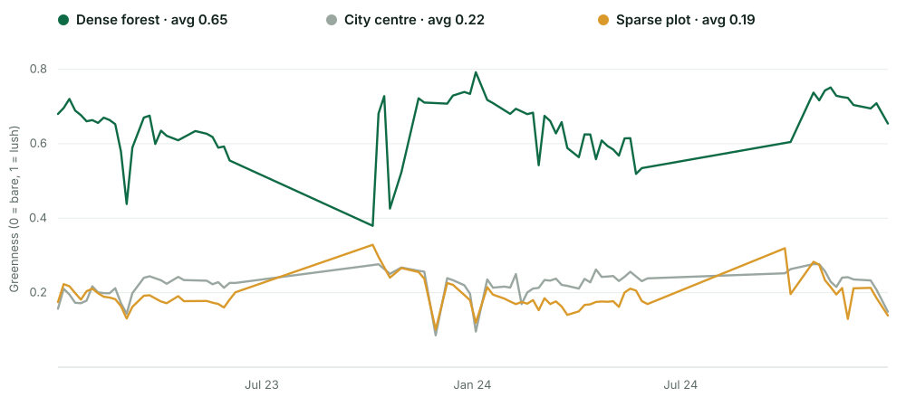
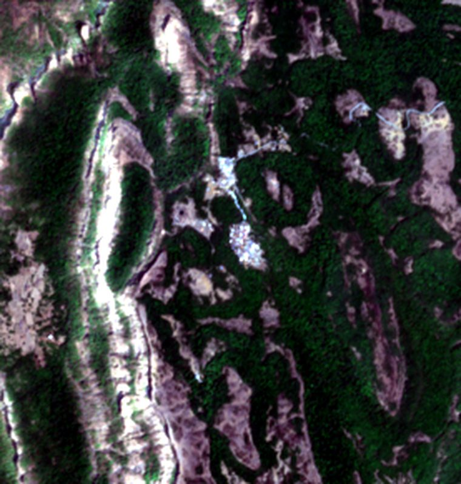
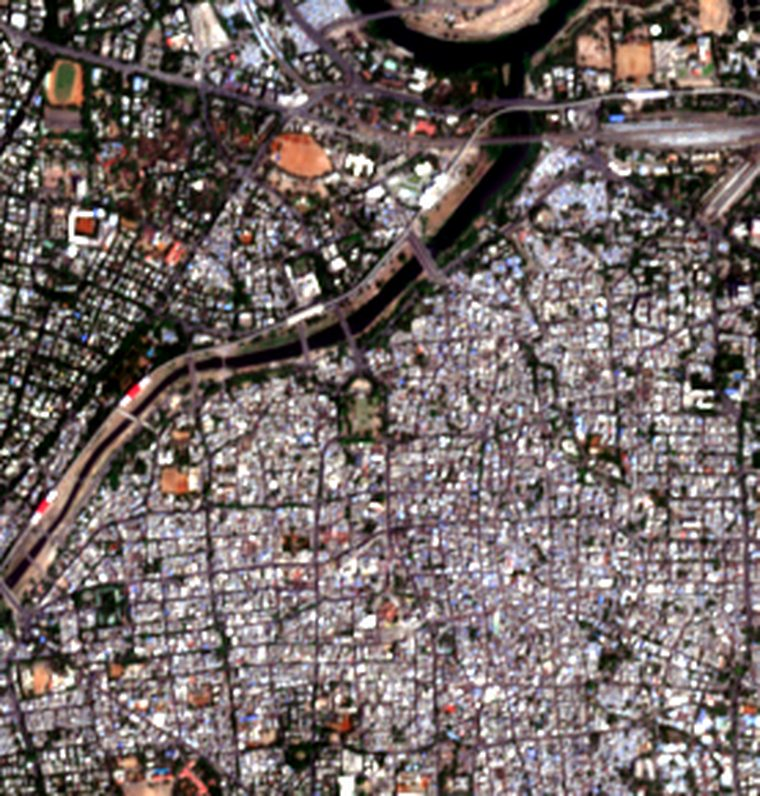
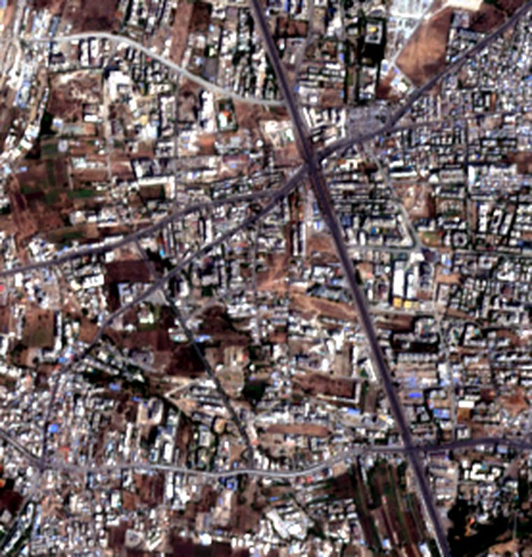
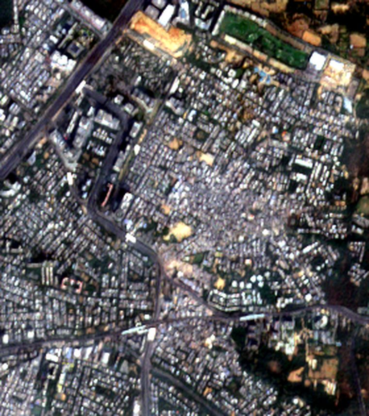

Proof you can see from space
Did the trees
actually grow?
The satellite knows.
Companies in India must spend billions each year on good causes — planting forests, restoring land, cleaning water — and new rules say they have to prove it worked. Today that proof comes from the same people who spent the money. GroundTruth checks the ground itself, using free satellite photos anyone can look up.
How green is the land, from space?
The problem
It’s not missing reports. It’s missing proof.
Every project files a report. But the company being graded pays for its own report card, and the numbers come from the very people who did the work. Almost no one independently checks what really happened on the ground.
- ₹34,909crore spent on social causes in a single year — by law. India, FY2023–24 · MCA
- 18% of large companies explain how they actually measured their impact. KPMG India, 2024
- 7.5% of trees survived in one flagship government planting drive. Government audit (CAG)
And new rules now require companies to prove their results independently — so honest, low-cost verification is about to matter far more than it does today.
How it works
No site visit. No special hardware. Three steps.
-
1
Point it at the place
The project shares a simple map of exactly where they planted or restored.
-
2
Pull the satellite photos
Free public images, taken every few days, going back years — no account needed.
-
3
Measure the green
The satellite sees how green the land is, and whether it’s growing — and turns that into a clear, independent verdict.
₹0 The photos are free, so the check can run all year — not once a year. A manual field survey can cost ₹15–50 lakh.
The proof
We tried it on real places.
We measured three places over two years — a dense forest, a city centre, and a sparse plot — and let the satellite tell them apart. Here is exactly what it saw.




The gap between a thriving forest and bare ground is so wide they barely overlap — which is exactly why a tree-planting claim is easy to check from space.

An honest test
We tested it on a real success — and it caught our mistake.
We pointed the tool at a famous restored forest near Gurugram, expecting a glowing result. Instead it said: not enough green here. The reason wasn’t the forest — it was our map. It was slightly off, and landed on the crowded city next door instead of the trees.
The satellite can only check the exact spot you point it at — so the project’s real map matters more than any clever technology. And a tool you can trust is one that tells you when something’s off, instead of flattering you.
Proof you can stand behind — all year, not once a year.
GroundTruth starts where results are visible from space: forests, water, and land. The goal is simple — move from “we planted trees” to “here’s the proof they’re growing,” in a way anyone can check.
Read the feasibility study (PDF) the full method and results, written up